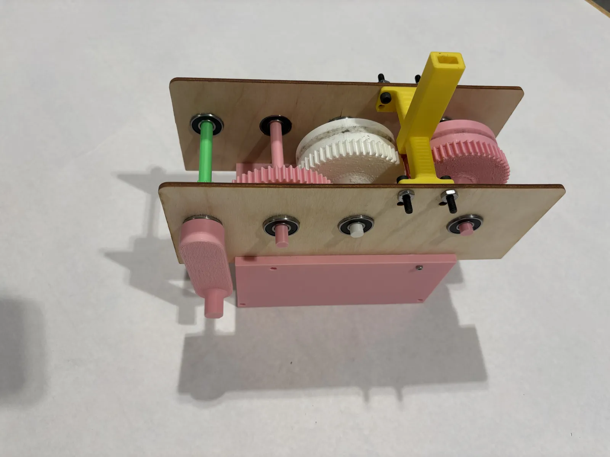
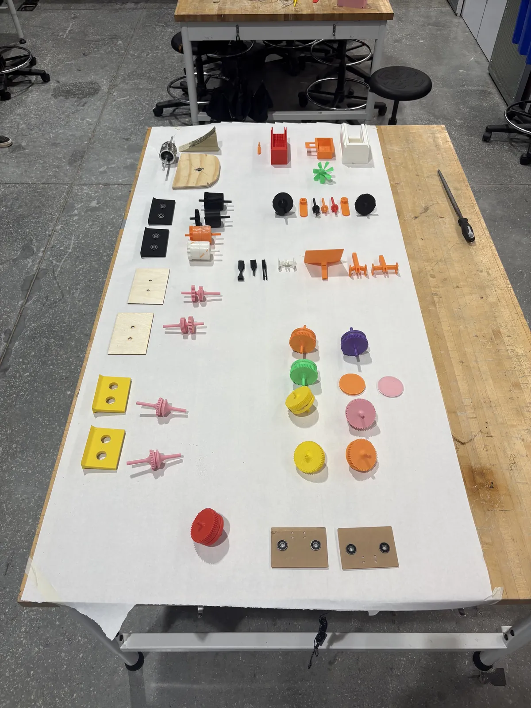

Seed Sheller
Roller-Based Sunflower Seed Sheller — Duke University


My Role
4-person team. Designed and CAD'd the rollers, drive mechanism, and funnel.
A roller-based sunflower seed sheller — crack the shell, keep the kernel whole. The funnel was the easy part; it just has to feed seeds into the rollers one at a time. The hard part was the rollers: getting the geometry right so each seed cracks along its seam instead of getting crushed at random. Took several iterations to land on a roller design that did that consistently.
Results
- 41 intact kernels in a 3-minute run — top score of 8 teams on a yield-minus-waste metric